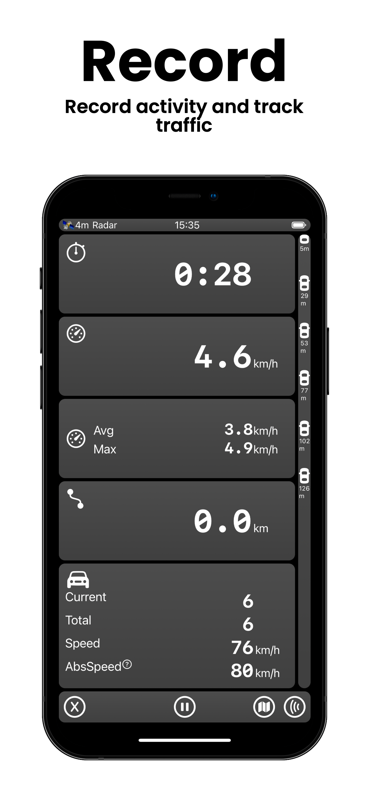
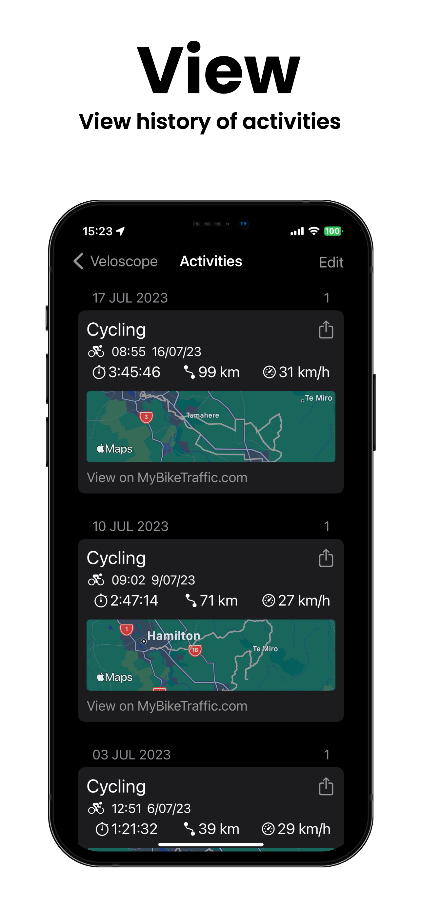
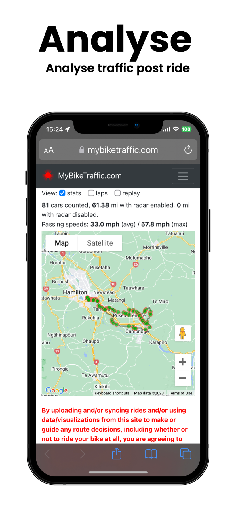
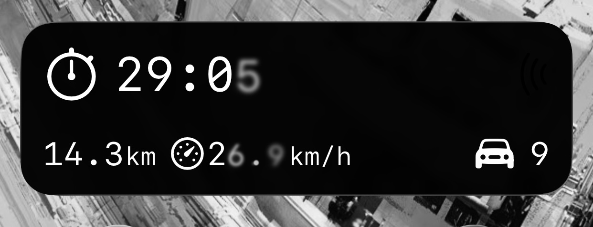
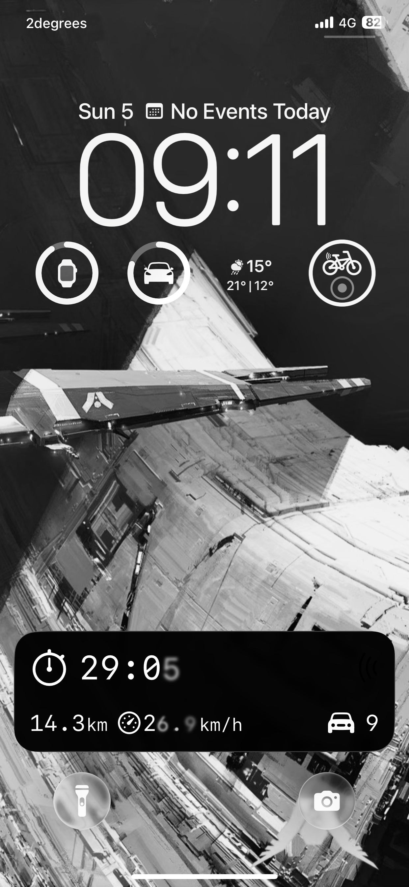
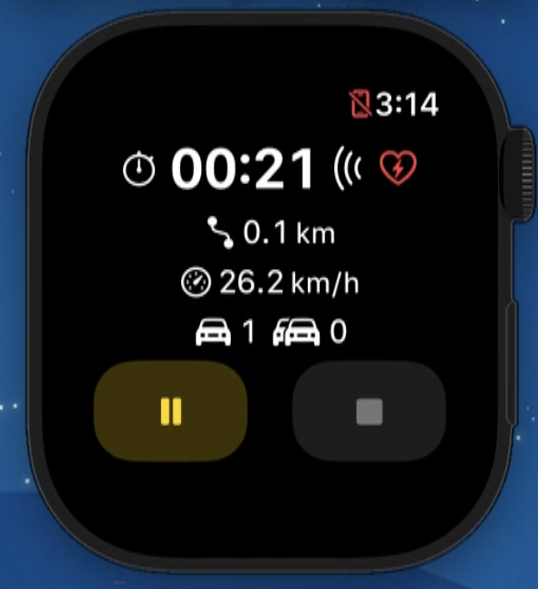

 |
 |
 |
Features
Radar Traffic View
Customizable positioning with optional audible alerts as vehicles approach.
Real-Time Monitoring
See vehicle counts and totals during your activity sessions.
Speed Data
View relative approach speeds and absolute speeds of approaching vehicles.
Activity Recording
Record start time, duration, distance, and average/max speeds with integrated radar data.
Auto Pause/Resume
Configurable automatic pausing so you can focus on your ride.
Activity Recovery
Restart the app without losing your session data.
Auto-Upload
Optional background uploading to MyBikeTraffic.com with success notifications.
FIT File Export
Share your activity files with other apps or your computer.
Live Activity
See your duration, distance, speed, and vehicle count on the Lock Screen and Dynamic Island while you ride.
Lock Screen Widget
Add a Veloscope widget to your Lock Screen for at-a-glance activity stats.
Shortcuts
Start and stop recording hands-free using Siri Shortcuts or the Shortcuts app.
Headphone Audio Alerts
Listening to music through headphones? Veloscope briefly lowers your music as alerts play so you never miss a vehicle alert.
Always with You

Live Activity
Your key stats — right on the Lock Screen and Dynamic Island. No need to unlock your phone.

Lock Screen Widget
A lock screen accessory widget keeps Veloscope one tap away.
What's New in 1.2
Apple Watch support and more — coming in the next update.

Apple Watch
Veloscope is coming to your wrist. View live radar alerts, car counts, and recording status directly on Apple Watch — and stop recordings without reaching for your phone.
- Live radar alerts and vehicle counts
- Stop recordings from your wrist
- Haptic feedback when vehicles are detected behind you
- Watch face complications for instant access
Watch Complications
Add Veloscope to your watch face for instant access to start and stop recordings.
Haptic Alerts
Get wrist haptics when vehicles are detected behind you — no need to glance at your phone.
Improved Background Uploads
Activity uploads to MyBikeTraffic are more reliable. If an upload is interrupted, it resumes automatically next time the app runs.
Compatible Radars
- Garmin Varia RTL515
- Magene L508
- Wahoo Radar (beta)
Pricing
Free to try with 3 activities. Unlock unlimited recording with a one-time in-app purchase.